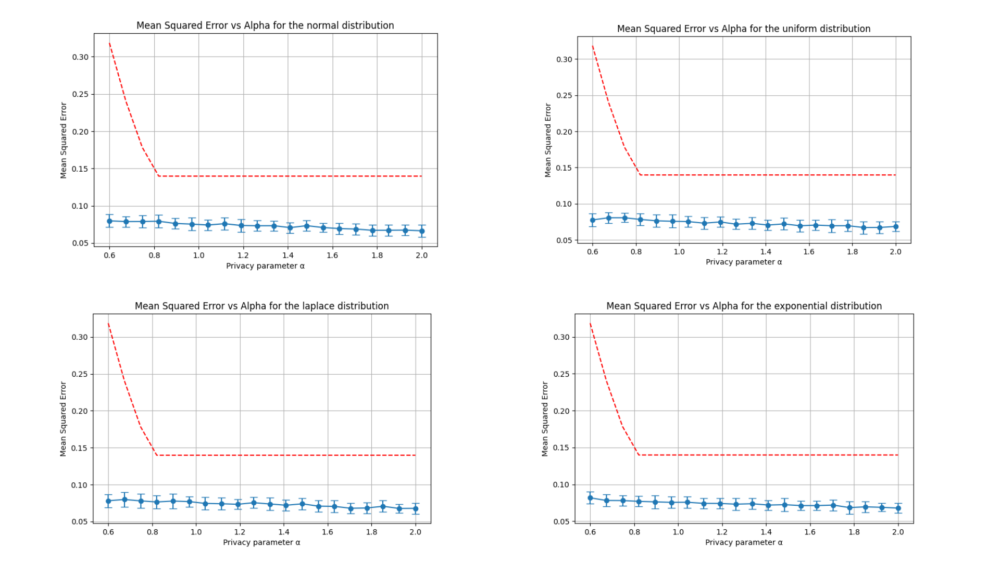
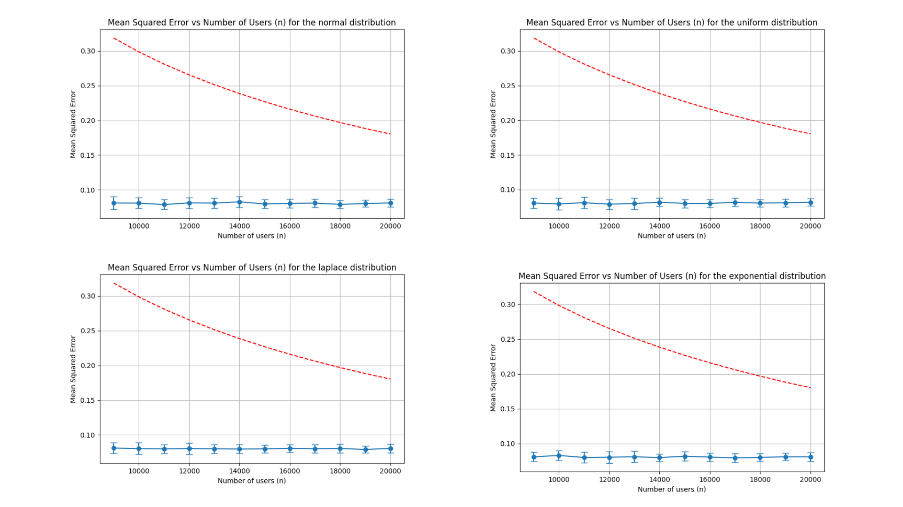
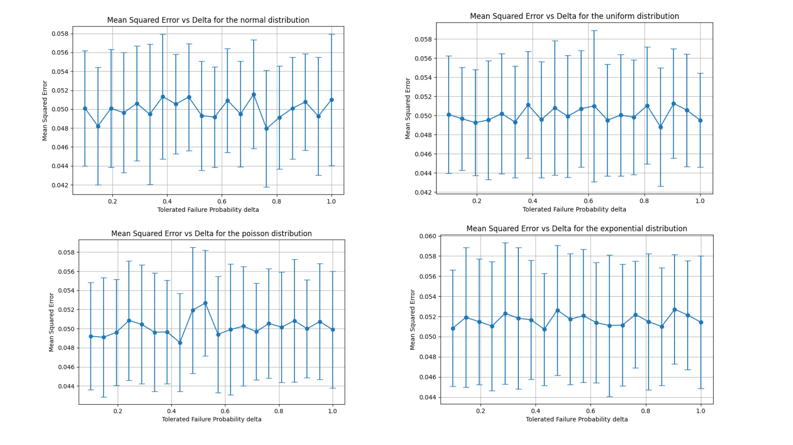
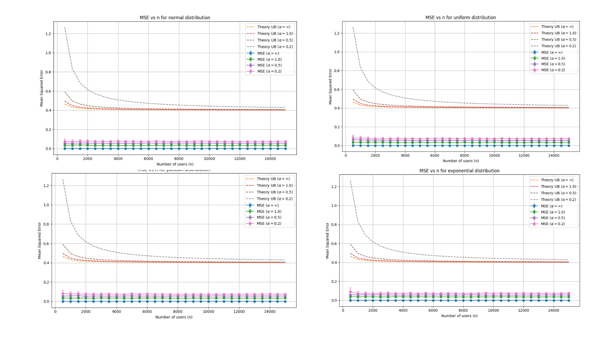

Usage
This section presents usage examples of the DAME-BS algorithm.
Risk_vs_alpha
experiments.risk_vs_alpha
This script runs the DAME-BS algorithm for various distributions and plots the mean squared error (MSE) vs. privacy parameter α.
It imports core utilities from dame_bs.utils and supports multiple distributions.
- Usage:
Run directly to generate plots.
- experiments.risk_vs_alpha.experiment_risk_vs_alpha_for_dist(distribution, n=9000, m=20, true_mean=0.3, trials=50, delta=0.1)[source]
Runs a risk-vs-alpha experiment for a given distribution.
- Parameters:
distribution (str) – Name of the distribution ( “normal”, “uniform”,”poisson”,”exponential”).
n (int) – Number of users. Default is 9000.
m (int) – Number of samples per user. Default is 20.
true_mean (float) – True mean value used for the experiment. Default is 0.3.
trials (int) – Number of experiment trials. Default is 50.
delta (float) – tolerated probability of failure of binary search in DAME-BS. Default is 0.1.
- Returns:
None. Displays plots for each distribution.
Risk_vs_n
experiments.risk_vs_n
This script runs the DAME-BS algorithm for various distributions and plots the mean squared error (MSE) vs. number of users n.
It uses utility functions from dame_bs.utils.
- Usage:
Run directly to generate plots.
- experiments.risk_vs_n.experiment_risk_vs_n_for_dist(distribution, alpha=0.6, min_n=500, m=20, true_mean=0.3, trials=50, delta=0.1)[source]
Runs a risk-vs-n experiment for a given distribution.
- Parameters:
distribution (str) – Name of the distribution ( “normal”, “uniform”, “poisson”,”exponential”).
alpha (float) – Privacy parameter. Default is 0.6.
min_n (int) – Minimum number of users. Default is 9000.
m (int) – Number of samples per user. Default is 20.
true_mean (float) – True mean value used for the experiment. Default is 0.3.
trials (int) – Number of experiment trials. Default is 50.
delta (float) – tolerated probability of failure of binary search in DAME-BS. Default is 0.1.
- Returns:
None. Displays plots.
Risk_vs_delta
experiments.risk_vs_delta
This script runs the DAME-BS algorithm for various distributions and plots the mean squared error (MSE) vs. failure probability of binary search delta.
It imports core utilities from dame_bs.utils and supports multiple distributions.
- Usage:
Run directly to generate plots.
- experiments.risk_vs_delta.experiment_risk_vs_delta_for_dist(distribution, n=9000, m=20, true_mean=0.3, trials=50, alpha=0.6)[source]
Runs a risk-vs-delta experiment for a given distribution.
- Parameters:
distribution (str) – Name of the distribution ( “normal”, “uniform”,”poisson”,”exponential”).
n (int) – Number of users. Default is 9000.
m (int) – Number of samples per user. Default is 20.
true_mean (float) – True mean value used for the experiment. Default is 0.3.
trials (int) – Number of experiment trials. Default is 50.
alpha (float) – Privacy parameter. Default is 0.6.
- Returns:
None. Displays plots for each distribution.
Risk_vs_n_with_alpha
experiments.risk_vs_n_with_alpha
This script runs the DAME-BS algorithm for various distributions and plots the mean squared error (MSE) vs. number of users n for different values of alphas.
It uses utility functions from dame_bs.utils.
- Usage:
Run directly to generate plots.
- experiments.risk_vs_n_with_alpha.experiment_risk_vs_n_multiple_alphas(distribution='normal', alpha_values=[inf, 1.0, 0.5, 0.2], min_n=500, max_n=15000, step=500, m=20, true_mean=0.3, trials=50, delta=0.1)[source]
- Parameters:
distribution (str) – Name of the distribution ( “normal”, “uniform”, “poisson”,”exponential”).
alpha_values (List[float]) – List of privacy/risk parameters α to compare. Use np.inf to indicate the non-private (infinite-α) case.
min_n (int) – Smallest user population size to test.Default is 500.
max_n (int) – Largest user population size to test. Default id 15000.
step (int) – Increment in n between successive experiment points. Default is 500.
m (int) – Number of samples per user. Default is 20.
true_mean (float) – True mean value used for the experiment. Default is 0.3.
trials (int) – Number of experiment trials. Default is 50.
delta (float) – tolerated probability of failure of binary search in DAME-BS. Default is 0.1.
- Returns:
None. Displays plots.
Results
Mean Squared Error vs Alpha for the different distributions.
{kind=link}
Mean Squared Error vs n (total number of users) for the different distributions.
{kind=link}
Mean Squared Error vs delta (tolerated failure probability of Binary Search) for the different distributions.
{kind=link}
Mean Squared Error vs n (total number of users) for the different distributions for different values of privacy parameter alpha.
{kind=link}